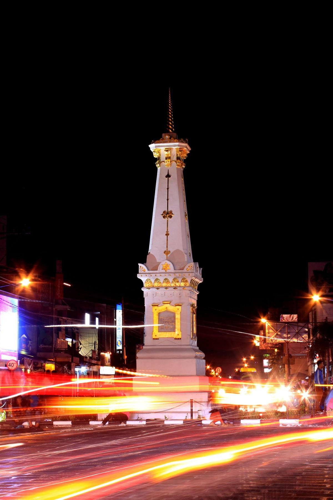

Ngayogyakarta
Tugu Yogyakarta (bahasa Jawa: ꦠꦸꦒꦸꦔꦪꦺꦴꦒꦾꦏꦂꦠ, translit. Tugu Ngayogyakarta) adalah sebuah tugu atau monumen yang sering dipakai sebagai simbol atau lambang dari kota Yogyakarta. Tugu ini dibangun oleh pemerintah Belanda setelah tugu sebelumnya runtuh akibat gempa yang terjadi waktu itu.
Tugu sebelumnya yang bernama Tugu Golong-Gilig dibangun oleh Hamengkubuwana I, pendiri kraton Yogyakarta. Tugu yang terletak di perempatan Jalan Jenderal Sudirman dan Jalan Margo Utomo ini, mempunyai nilai simbolis dan merupakan garis yang bersifat magis menghubungkan laut selatan, kraton Jogja dan gunung Merapi.Pada saat melakukan meditasi, konon Sultan Yogyakarta pada waktu itu menggunakan tugu ini sebagai patokan arah menghadap puncak gunung Merapi. Tugu ini sekarang merupakan salah satu objek pariwisata Yogya, dan sering dikenal dengan istilah “tugu pal putih” (pal juga berarti tugu), karena warna cat yang digunakan sejak dulu adalah warna putih. Tugu pal ini berbentuk bulat panjang dengan bola kecil dan ujung yang runcing di bagian atasnya. Dari kraton Yogyakarta kalau kita melihat ke arah utara, maka kita akan menemukan bahwa Jalan Malioboro, Jalan Margo Utomo, tugu ini, dan Jalan A.M. Sangadji akan membentuk satu garis lurus persis dengan arah ke puncak gunung Merapi.